Final Project Progress
Bill of materials
| S/No | Components | Cost per Item | Qty | Total Cost | Remarks |
|---|---|---|---|---|---|
| 1 | Ultrasonic Sensor | $0.00 | 1 | $0.00 | Provided |
| 2 | DC Motor | $0.00 | 1 | $0.00 | Provided |
| 3 | Bicycle rubber tube/ Yoga band | $5.00 | 1 | $5.00 | Outside |
| 4 | Copper board | $0.00 | 1 | $0.00 | Provided |
| 5 | ATtiny 44 | $0.00 | $0.00 | Provided | |
| 6 | Wires | $0.00 | $0.00 | Provided | |
| 7 | Battery Holder | $0.00 | 1 | $0.00 | Provided |
| 8 | L298N Motor Driver | $0.00 | 1 | $0.00 | Provided |
| 9 | CNC Wood | $0.00 | 1 | $0.00 | Provided |
Ideation
For this project i will be working alongside Danish. Our idea is to make a hand and conveyor belt system in which he will work on the robotic arm and i will work on the conveyor belt. The idea is based off a project done by Robotics Learner where he had a system which senses the object logo and prints out what logo is on it. Since the knowledge is currently way out of my scope and also since we do not have alot of time, I discussed with Danish and come to an agreement where we just have to sense an object on the conveyor belt, make it stop for a bit and continue again.
Design
I tried to follow designs from conveyor belts online but it is rare to see a DIY one made out of wood. Some pictures i got my ideas from are seen below.
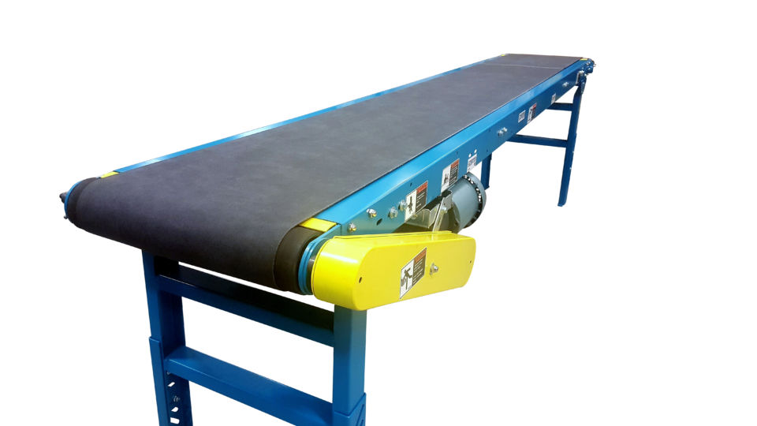{kind=link}
My first draw up is as seen below. The top is for the ultrasonic sensor. However, there are multiple problems I came across. Firstly, there is no proper place to store my electronics in. Secondly, There isn't any slots or holder for the rollers.
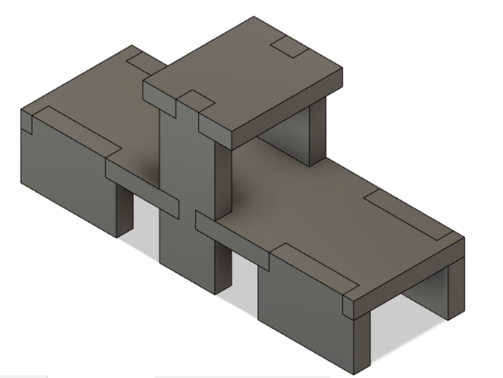{kind=link}
I went ahead and editted my design. I made changes so as to adress the problems that i came across so having a place to put all the electronics and also for the rollers. The final design looks as such with the motor adapter and also a slot below the contraption itself for the electronics.
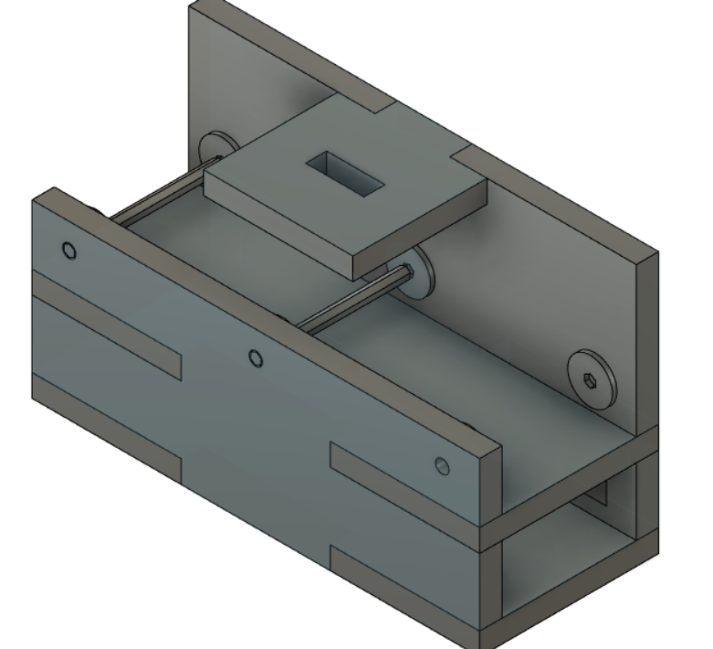 Fusion design 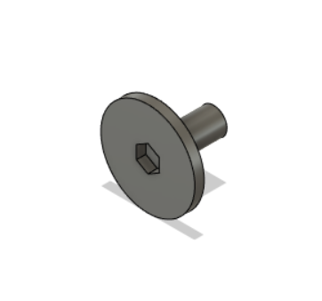 Motor Adapter 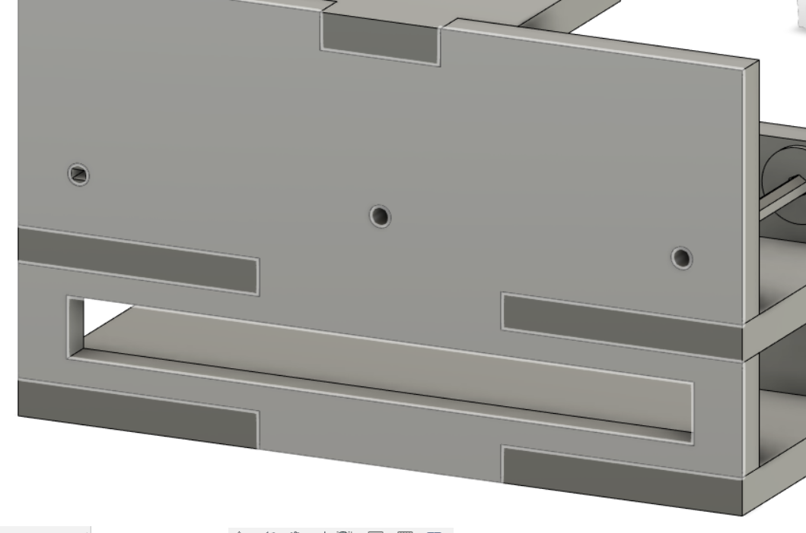 Slot for electronics{kind=link}
{kind=link}
{kind=link}
The whole design is about 300x120x60 mm in size. The whole thing would be made out of CNC wood of thickness 15mm. As for the rollers as seen above, will be cut out using the laser cutter since it is thinner. The holder for the rollers will be out of pencils from my household.
Creation
Once i got the design im happy with, we now have to cut out the thing itself. Initially before cutting, i first save each face as a DXF file. To do so, simply just creat a sketch on each face then right click the sketch and save it as a DXF file. As for the motor adapter however, that will be 3D printed so i simply right click the component and save it as an STL file.
For the cutting, we will be doing it in the T11 FabLAB. Once there on the computer, we have to import our different DXF files to VCarve Pro.
First thing to do on VCarve Pro is to obviously create a new file. Once created, make sure that the Job size Width and Height is 1200mm. Once that is done, I can then import in my DXF files. To move the drawing around, simply just click on the Transform Mode under the Edit Objects tab.
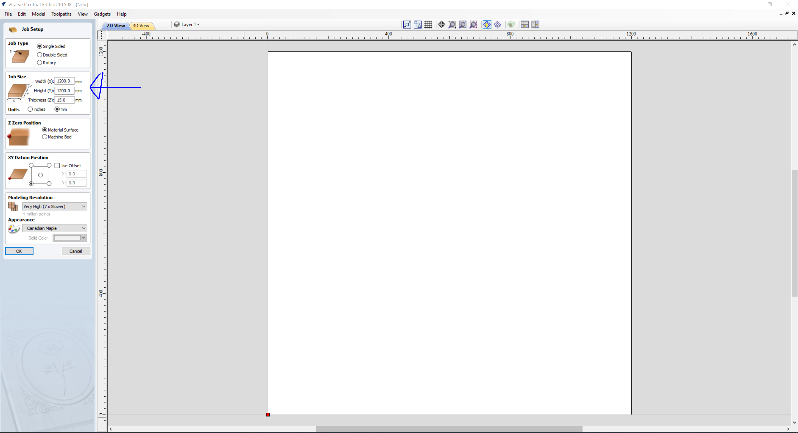 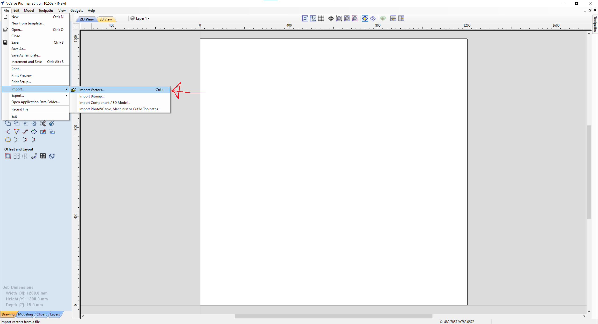 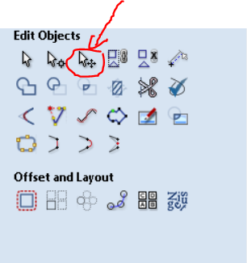{kind=link}
{kind=link}
{kind=link}
Once the drawings have been moved nicely to the canvas, we now need to do a dogbone fillet to connecting corners to allow for a nice snug fit. To do that, simply just click on the Fillet button under the Edit Objects tab and select 'Dog-Bone' Fillet. Make sure that the radius is 3mm as we will be using a 6mm endmill with 3mm diameter. Then just click on corners where parts are going to connect to one another, Example is shown below.
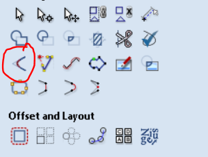 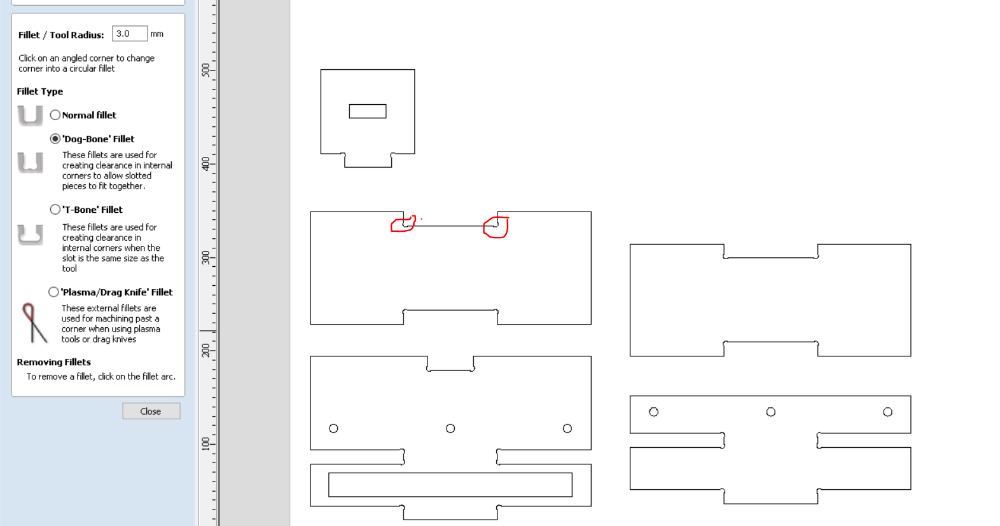{kind=link}
{kind=link}
After that we will be proceeding to the Toolpath section. Simply click on the Toolpath button at the top right of the screen. Once there, we will be selecting Profile Toolpath. In the toolpath settings, we first want to make sure that the right tool is used so click on select and choose the 6mm endmill and change the number of passes to 3 to minimise time spent cutting.
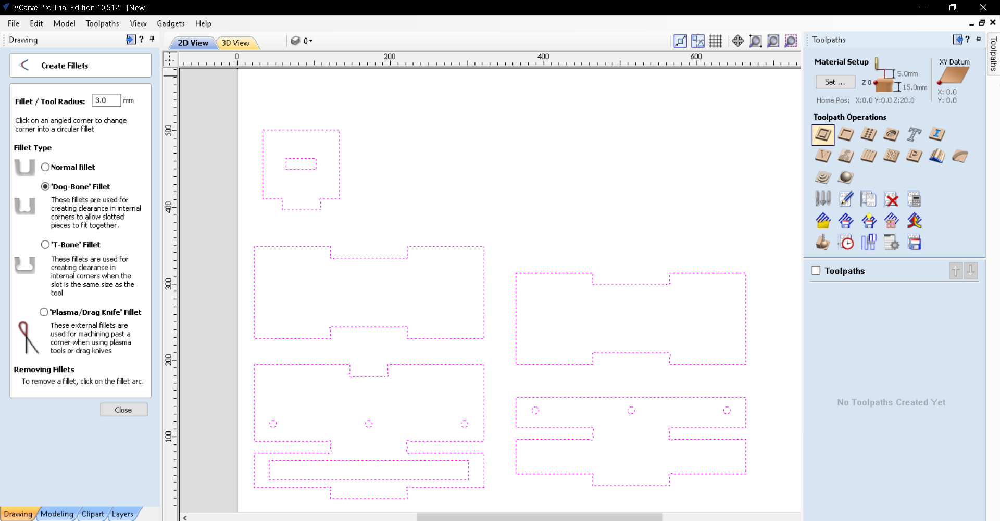 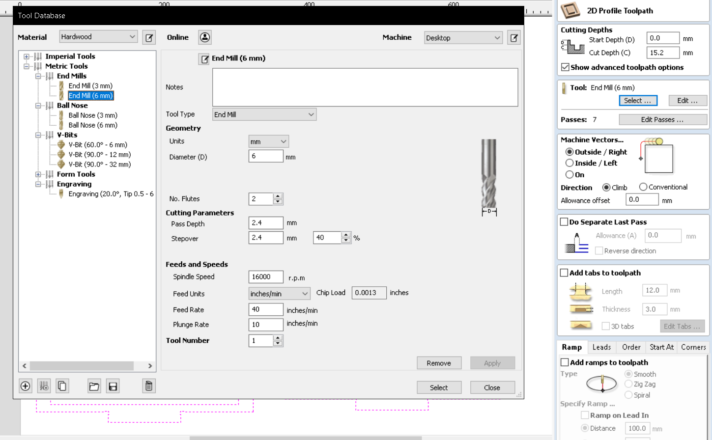{kind=link}
{kind=link}
Next we will be adding tabs which will ensure that the cut out pieces will still be attached to the wood during cutting so as to avoid inaccuracy during cutting as it might move about witout tabs. To do so, simply click on the Add tabs box and click on Edit Tabs. Here, we can either automatically add tabs to our drawing by clicking on Add Tabs or you simply just click on the places you want your tabs to be. More tabs doesnt necessarily mean its good as you have to break off more tabs after cutting. For my i placed my own tabs.
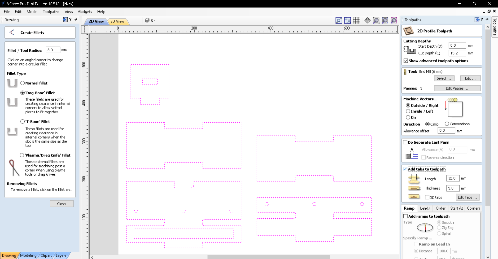 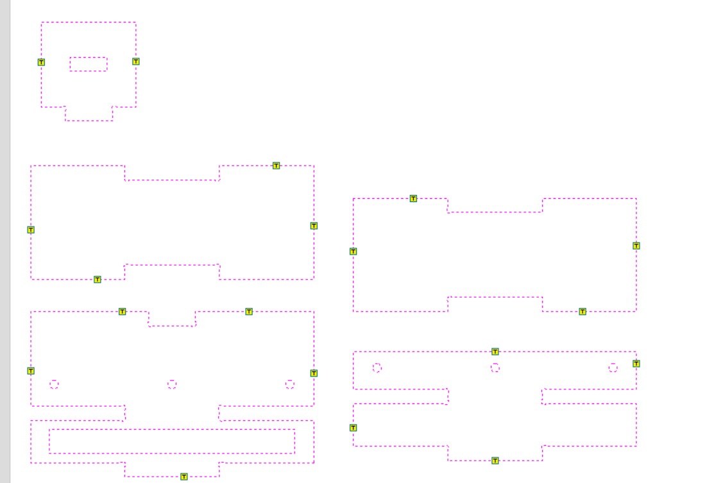{kind=link}
{kind=link}
That will be all for the settings. Now just scroll all the way down and click on Calculate and press Ok. They will now bring you to the toolpath screen. Here you can watch a preview of the cut before you cut and all those good stuff. Once you are done, simply just click Save and proceed with the cutting.
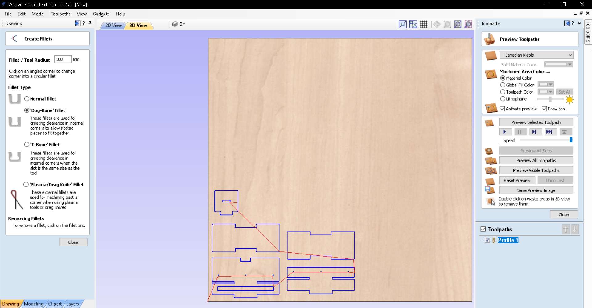{kind=link}
CNC Cutting

Assembly
The assembly was easy enough. I first had to sand off the edges of the wood before putting them all together. Thankfully my project does not require any screws to put them all together so i simply had to just piece them all together. I tried putting the pieces together and it looks something like this.
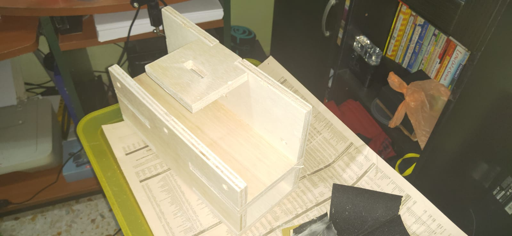{kind=link}
Next i laser cut the rollers and 3D printed the motor adapted. Alongside that, for the belt, i used the yoga band which i bought from Decathlon. I then put them all together for the final hardware. I am very happy with the result as it looks somewhat like what i envisioned.
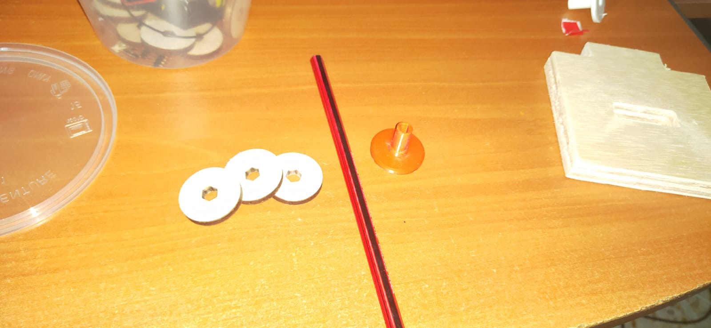 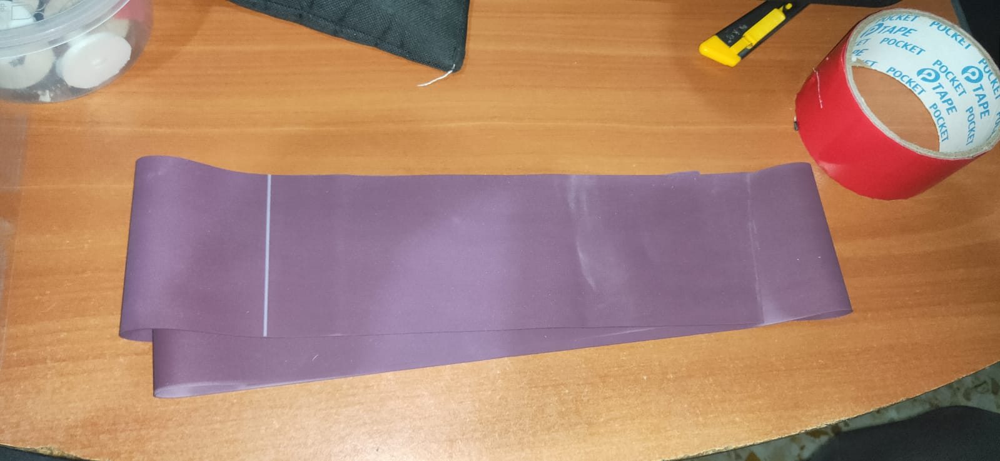 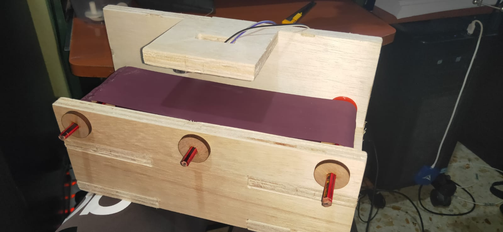{kind=link}
{kind=link}
{kind=link}
Electronics
For the electronics portion the components i needed were, my own hello board, DC Motor, L298N to drive the motor, Battery holder to power the driver and also Ultrasonic sensor
{kind=link}
{kind=link}
{kind=link}
Hello Board
The designing of my hello board was pretty straight forward. Initially i wanted to have a button to my project but i removed it last minute after soldering my board due to reasons which is why i used the ATTiny44 board as there are 14 I/O pins. Other than that, in my schematic, there are 0ohm resistors. These resistors acts as jumper wires as the way i designed my board (with the help of my lecturer), makes the connection cramped up.
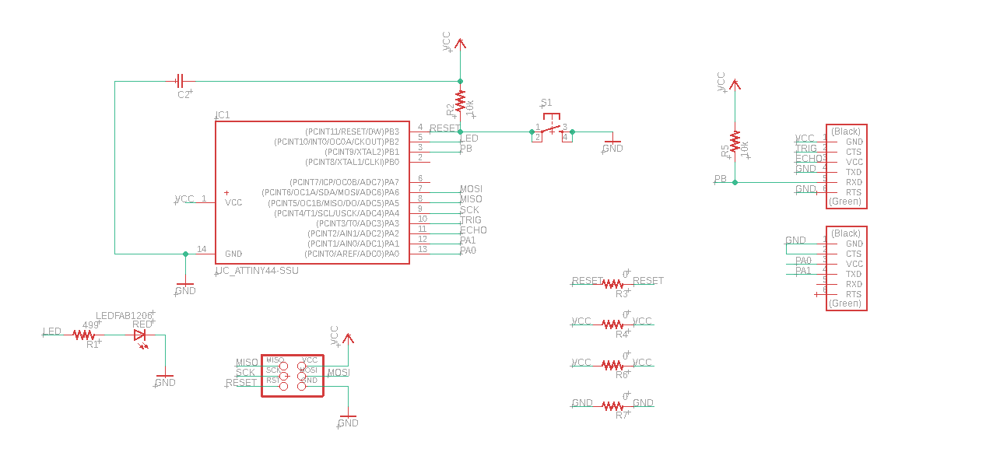 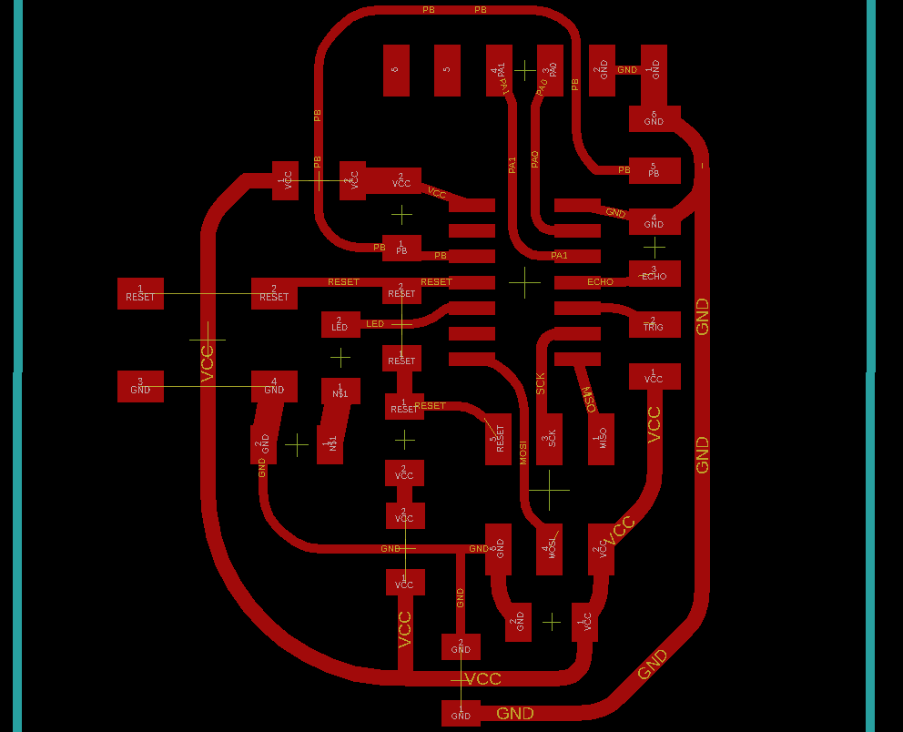{kind=link}
{kind=link}
My first soldering attempt was very bad. It didnt work surprise surprise. But after some assistance from my lecturer Mr Chew, he was able to make it work and replace the jumper wires that i had with an actual 0ohm resistors so happy days. The new board can be seen above.
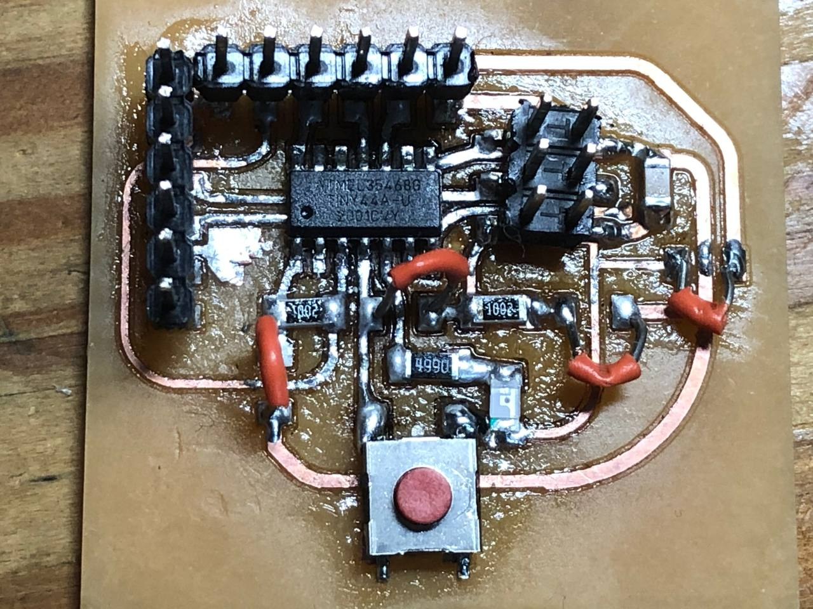{kind=link}
To test out my board and that my components are working, i first did up a program for my ultrasonic sensor which i found online. I first had to look up the datasheet for the ATTiny44 as the pinouts are different but other than that it is pretty straight forward from there.This is the outcome. It works.
 ATTiny44 pinout
ATTiny44 pinoutNext i tested to see if the motor works.
Once the testing is all done, I am ready to put everything together. It is pretty straight forward as im only using 2 components and also no libraries are needed for my programming. The final code is as shown below and so as the working product.
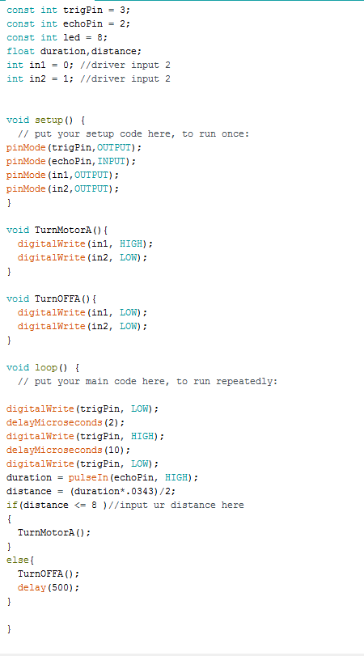 Code{kind=link}
Overall Thoughts
Overall it was a pretty straight forward project. There are definitely flaws such as the ultrasonic sensor sometimes doesnt pick up that there is an object and also i could not get to interface an emergency stop button as planned but other than that i am quite happy with the end product. It is somewhat something i envisioned. Definitely if given more time i would work on it more and improve upon it but with the time given i am happy with the final product.